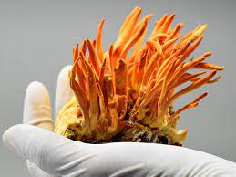

Cordyceps is not your ordinary mushroom.It has a rich history rooted in traditional chinese medicine,cordyceps sinensis fungus is known for its abilityto thrive in high-altitude regions,particularly in the Himalayas.Historically,it was used to support various aspects of health,including energy,vitality, and respiratory health. The regular harvesting period stretches from April to August. It grows only at the high-altitude regions of about 3800 meters above sea level in the cold, grassy, alpine meadows of the mountain Himalaya.
The Origin and History of Cordyceps
Cordyceps

Unlocked Your Potential With the Power of Mushrooms
Cordyceps are an athlete’s secret weapon. They are thought to increase the body’s production of ATP (adenosine triphosphate) which is critical in delivering energy to muscles during exercise. Studies show that this may improve your overall use of oxygen, benefit anaerobic threshold, increase V02 max, and enhance overall endurance performance.
Cordyceps is not your ordinary mushroom.It has a rich history rooted in traditional chinese medicine,cordyceps sinensis fungus is known for its abilityto thrive in high-altitude regions,particularly in the Himalayas.Historically,it was used to support various aspects of health,including energy,vitality, and respiratory health.
Although cordyceps is sometimes called a mushroom, the type of cordyceps that is made in a lab does not grow a mushroom. Cordyceps might improve immunity by stimulating cells and specific chemicals in the immune system. It might also help fight cancer cells and shrink tumor size, particularly with lung or skin cancers. Natural cordyceps is hard to get and might be expensive.
The Power of mushrooms:A Natural Remedy for Stress and Anxiety
Cordyceps is not your ordinary mushroom.It has a rich history rooted in traditional chinese medicine,cordyceps sinensis fungus is known for its abilityto thrive in high-altitude regions,particularly in the Himalayas.Historically,it was used to support various aspects of health,including energy,vitality, and respiratory health.